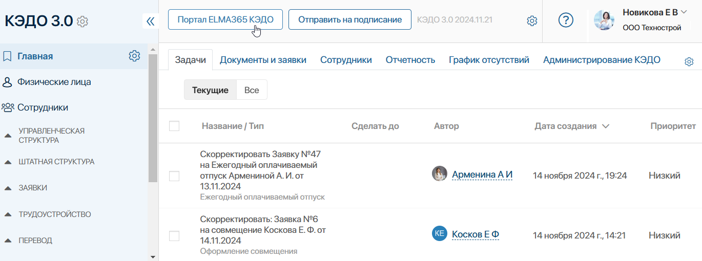
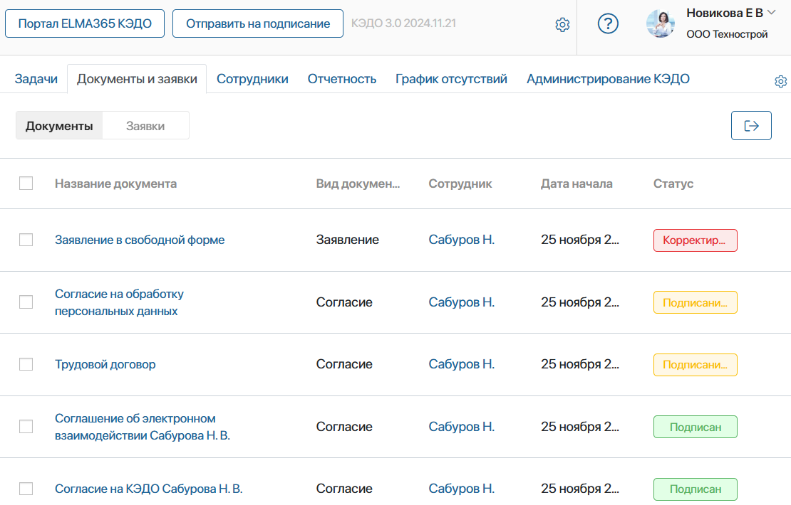
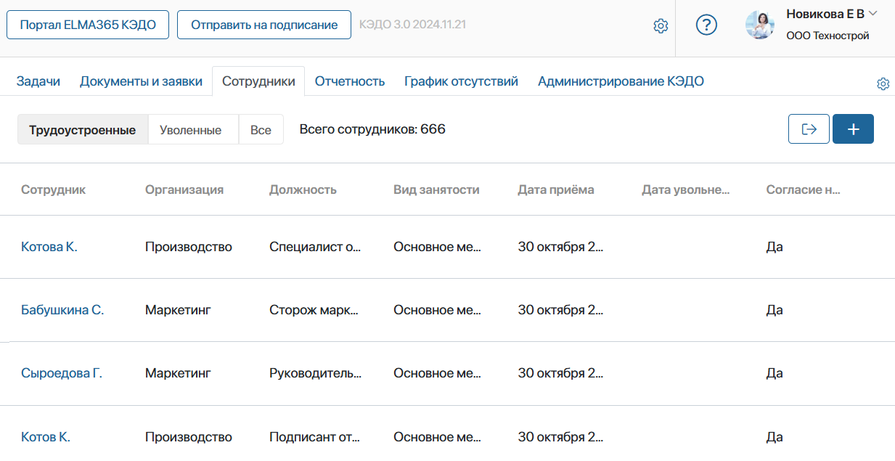
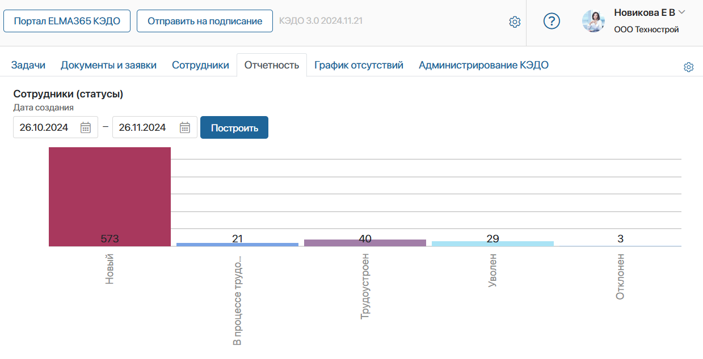
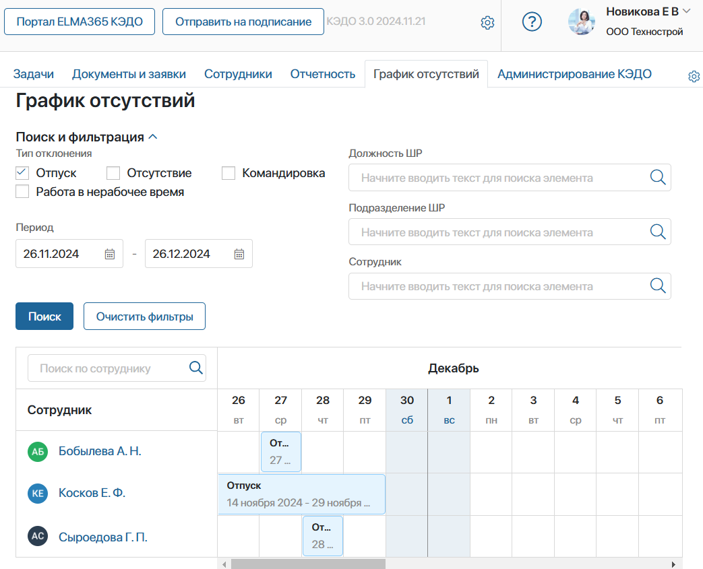

Для сотрудников отдела кадров в ELMA365 предусмотрено рабочее пространство — страница Главная в разделе КЭДО 3.0.
На отдельных вкладках страницы собраны данные для обработки кадровых процессов. Здесь можно вести учёт документов и созданных пользователями заявок, отслеживать их статусы, просматривать список назначенных задач, информацию о сотрудниках и их отсутствиях.
Кнопки доступа к порталу КЭДО и универсальному процессу подписания
Со страницы Главная вы можете быстро перейти к важным кадровым процессам. Для этого на верхнюю панель страницы добавлены кнопки:

- Портал ELMA365 КЭДО — нажмите, чтобы открыть ваш личный кабинет на портале КЭДО;
- Отправить на подписание — вы сможете выслать документ на подписание любому сотруднику, например, чтобы подтвердить ознакомление с дополнительным соглашением или приказом. Подписанный файл сохранится в виде элемента приложения в один из справочников в разделе КЭДО 3.0 согласно виду документа, который вы выберете. Нажмите кнопку и заполните форму в открывшемся окне:
- загрузите файл с компьютера или выберите его из файлов компании;
- укажите вид документа, нажав на значок лупы и выбрав запись из списка;
- задайте сотрудника и срок выполнения задачи.
- дополнительно можно включить подписание файла работодателем, определив, кому из сотрудников придёт задача;
- нажмите Отправить.
Вкладки для обработки кадровых процессов
Список назначенных задач
На вкладке Задачи вы сможете просмотреть ваши задачи по кадровым документам, открыть и выполнить их, например, согласовать документы или подписать их сертификатом электронной подписи.
С помощью фильтров над списком задач вы можете сгруппировать их:
- Текущие — посмотреть только актуальные задачи;
- Все — отобразятся текущие и завершённые задачи.
Документы и заявки от сотрудников
На вкладке Документы и заявки собраны:
- оформленные документы, проходящие маршруты обработки;
- созданные сотрудниками заявки по кадровым процессам.
Документы и заявки представлены в отдельных вкладках. Вы сможете видеть те записи, к которым у вас есть доступ на просмотр. Например, администратор может ограничить права доступа по филиалам компании. Тогда в список попадут документы и заявки от сотрудников, трудоустроенных в то же юридическое лицо, что и вы.
В таблицах на вкладках вы сможете посмотреть:
- вид документа: Согласие, Заявление, Приказ и т. д.;
- кадровый процесс, по которому создана заявка;
- сотрудника, по которому запущен экземпляр кадрового процесса;
- дату запуска процесса;
- текущий статус документа или заявки.
Нажмите на запись в таблице, чтобы открыть карточку документа или заявки и ознакомиться с подробной информацией. Также вы можете просмотреть или скачать печатные формы файлов, которые сформировались в процессе.

Список сотрудников организации
На вкладке Сотрудники вы можете просмотреть базу персонала компании. Если администратор системы настроил ограничение доступа по филиалам компании, в списке вы увидите сотрудников, которые трудоустроены в то же юридическое лицо, что и вы.
В таблице можно просмотреть подразделение, должность, вид занятости и дату приёма сотрудника. Также здесь отмечается наличие у сотрудника согласия на электронный кадровый документооборот.
С помощью фильтров над таблицей список сотрудников можно отсортировать и показать только трудоустроенных, уволенных или всех пользователей.
Нажав значок плюса в правом верхнем углу вкладки, вы сможете добавить нового сотрудника.

Отчёты по кадровому документообороту
На вкладке Отчетность администраторы системы могут настроить любые отчёты или графики, которые будут полезны для аналитики кадровых процессов компании.
Для примера на странице отображён отчёт, по которому можно отследить статистику приёма сотрудников в организацию. Столбчатый график показывает общее количество сотрудников в каждом статусе: Новый, В процессе трудоустройства, Трудоустроен и т. д.

Статистика отсутствующих сотрудников
На вкладке График отсутствий представлен отчёт по оформленным и согласованным отсутствиям всех сотрудников организации. Воспользуйтесь фильтрами, чтобы посмотреть отсутствия определённого сотрудника или задать поиск по периоду, подразделению, должности или типу отсутствия.

Вкладка для администрирования раздела «КЭДО 3.0»
Вкладка Администрирование КЭДО отображается только для администраторов системы. С помощью кнопок на этой вкладке, они смогут запустить служебные процессы для настроек ELMA365 КЭДО 3.0. Так можно выполнить первичную настройку решений, заполнить базу сотрудников, определить роли пользователей в кадровых процессах и т. д.